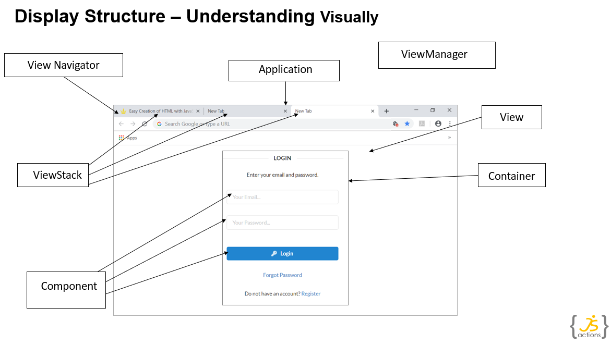
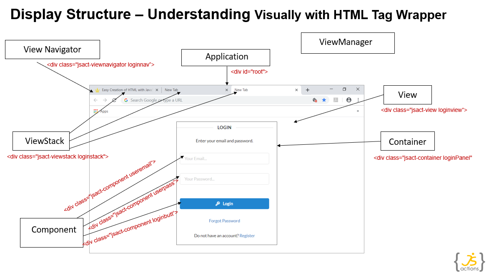

JSactions is modern UI framework developed using JavaScript next version ECMAScript 6+ for developing enterprise web application and hybrid mobile application rapidly with less effort. It is open source with MIT license and Extremely Lightweight (Minified Size ~ 30KB, Minified + gzip Size ~ 8KB). It is JQuery free and uses Native DOM queries to manipulate DOM elements. It provide structured mechanism for Navigation, View management using life-cycle methods and loosely connected with event pub sub.
Features
-
MV* Framework
-
Developed in Pure Vanilla Javascript ECMAScript 6+
-
In built Display Management for managing Views, Navigation
-
Easy Route and Navigation management
-
In built Event Management to make loosely coupled View, Component, Model with each other.
-
Quick and Easy Integration with any CSS Framework (Bootstrap, Semantic UI)
-
Easily extendible
-
Separate HTML design and behavior to give comfort to Designer and Developer.
-
In Build Provision for Memory Management using lifecycle methods.
-
MIT License
Terminology
-
JSactions defined Core Object terms w.r.t General web development.
-
JSactions application follows below terminology to translate General UI application in JSactions equivalent.
-
Understanding JSactions Core Object terms as shown below will help to understading framework functionality easily. below

-
Taking Browser as example Application to better understand.
Here Web Browser act as "ViewManager" , as an "Application" and as a "ViewNavigator". Each Tab is Consider as "ViewStack" which have its own page history. Each Tab shows One HTML Page is consider as "View" and Page Section such as Login Panel is consider as "Container". Page HTML Elements such as input field and button in login panel consider as "Component".


JSactions Core Objects
- JSactions framework consist of core objects as below.
ViewManager
-
ViewManager helps Application to do ViewManagement efficiently by using ViewNavigtor and Views with path and event based routing.
-
It Subscribe to EventBroadcaster's Navigation channel to receive navigation change events.
-
ViewManager find ViewNavigator based on Path Routes data and it match route info received in navigation change event.
-
ViewManager core functions :
- Transition of View by finding Owner ViewNavigator to move forward or in back.
- Creating , Updating and Destroying View Navigators.
- Finding Nested ViewNavigator and underlying views, viewstacks .
- Routing Navigation Events to Navigators by matching "Path" associate with Navigator.
- Activating, De-activating View Navigators.
-
For more details goto "ViewManager" class page.
ViewNavigator
-
UI navigation manages by ViewNavigator.
-
"ViewNavigator" is base class which have simple view navigation functionality.
-
ViewNavigator core functions :
- Manages set of view using stack-based history mechanism which also called as "ViewStack".
- Manages LifeCycle of View.
- Memory Management : In UI development speed and performance is very important. In order to achieve that, ViewNavigator ensure that one View active at a given time by default. However it keep previous ViewObject (NOT DOM Element) in Viewstack when history=true". Thus View DOM Element gets hide in order to save browser memory consumption.
- ViewNavigator also call View destroy method when user hits backbutton.
-
For more details goto "ViewNavigator" class page.
ViewStack
-
ViewNavigator manages set of view using stack-based history mechanism which also called as ViewStack. Thus each Viewstack represent its own view history stack. So JSactions supports multiple history stack too.
-
A ViewStack contains collection of Views that are stacked on top of each other, with only View on top of stack is visible, or active, at a time. The ViewStack manage by only Viewmanager.
-
Viewstack can be extended to customize its DOM template along with ViewNavigator.
-
For more details goto "ViewStack" class page.
View
-
View consider as single UI screen.
-
View contains Contents consist of "Containers" and "Components" and Model.View can be use with Core HTML Components also.
-
View manages View Template or DOM Content such behaviour, event listners etc.
-
View created and manage by ViewNavigator.
-
Only View have access to View Contents i.e Components , Containers and DOM Elements. If you want to change view content then you have to use View API(methods). Or communicate with View through unique event sent on Application channel.
-
Communication with View or Between Views : All Views are loosely connected and isolated. They to interact with other views or other parts of Application through events sent on Application channel. View(s) synchronized with Models and Business Services with Events only. This way View can make one-one or one-many eventbased communication
-
Passing data Between Views : Data can be pass between Views during navigation using "navparams" or using "viewevent".
Using "navparams" property: View has a "navparams" property , which use to pass data to View. "navparams" property further consume in view by components or StateManegment etc. Views pass data to each other during navigation.
Using Events :
sendDataToView() { let viewEvent = new ApplicationEvent(EventUtils.VIEW_EVENT, "View1_Data_Change", "params"); EventBroadCaster.appEventChannel.dispatchEvent(viewEvent); } -
Nested Navigation Support: View Also have ViewNavigator as Child. This veryuseful when there is requirement for nested navigation.
For example : TopBar Navigator have TabNavigator or BreadCrumb Navigator.
-
Navigating to Previous View : View have inbuilt provision to navigate on previous view.
Use Back Event Handler from your view custom backbutton in "addViewHandler" function.
addViewHandler() { super.addViewHandler(); let tmpviewEl = this.getViewElement(); // Back Navigation Event trigger by Custom Back Button let backButt = tmpviewEl.querySelector("." + this.back_lnk_id); backButt.addEventListener("click", (e) => { this.dispatchNavBackEvent(e); }); } -
Navigating Forward to Next View : To Navigate next view , current View have to specify next view by generating Navigation event with "ViewEventId ". ViewNavigator can also trigger navigaion event to change current view to next view.
In Following sample code Submit Button call "handleSubmit" function on click .
After that "handleSubmit" function create new NavigationEvent targeting Next View by its EventId (Here "View3_Nav_Event").
Once Navigation Event created it send to ViewNavigator using EventBroadcaster on Navigation Event Channel.
addViewHandler() { super.addViewHandler(); let submitButt = tmpviewEl.querySelector("." + this.submit_lnk_id); submitButt.addEventListener("click", (e) => { this.handleSubmit(e); }); } handleSubmit(event) { event.preventDefault(); let navEvent = new NavigationEvent(EventUtils.NAV_CHANGE_EVENT, "View3_Nav_Event", "testusers", this.route); EventBroadCaster.navEventChannel.dispatchEvent(navEvent); } -
For more details goto "View" class page.
Container
-
Container contains JSactions Components. Create custom container by extending base Container Class.
-
By using Container managing "logical" group of components is very easy, such as enable or change visibility of Container will make entire child component enable or invisble.
-
Container example are "Login Panel", "Address Panel", "Dashboard Panel" etc.
-
For more details goto "Container" class page.
Component
-
Component class is the base class for all visual components.
-
Component class use to manage DOM Elements such Form components or group of Elements such "DataTable".
-
Component provides easy DOM Elements management by providing "createDOMContent" method to render DOM template.
-
To management behaviour of DOM elements , Base Component Class ensure to invoke eventHandling after Component render HTML DOM template. So implement eventHandling in "addEventHandler" method and binding property using "BindingUtils" in "bind" method.
-
When setting "_createDOMElement=false" while creating instance of Component, Component class skip render DOM element part, assuming Component DOM Element already available and it take DOM element reference by componentId during Component creation.
-
For more details goto "Component" class page.
EventBroadcaster
-
EventBroadCaster is Centralize Singleton Static Class use to Broadcast Events in Application on Application Channel or Navigation Channel from Publisher to Subscribers Objects such View, ViewNavigator, ViewManager, Component etc.
-
It also known as Pub-Sub
-
It Supports Event Communication with One to One , One to Many pattern
-
EventBroadCaster provides two Event Channels .
- Application Event Channel 2) Navigation Event Channel
-
For more details goto "EventBroadCaster" class page.
EventChannel
-
Eventchannel use to Publish event to Channel subscribers.
-
Event dispatch using event channel with help of Event Broadcaster
-
It also known as Message Channel
-
Publish using Navigation Channel
//create Navigation Event let helloNavEvent = new NavigationEvent(EventUtils.NAV_CHANGE_EVENT, "Hello_NavEvent", "Message :: Hello World !!!", "/hello"); // Dispatch Navigation Event on Navigation Event Channel EventBroadCaster.navEventChannel.dispatchEvent(navEvent); -
Subscribe using Navigation Channel to Receive Navigation Event
EventBroadCaster.navEventChannel.addEventListener(EventUtils.NAV_CHANGE_EVENT, event => { this.handleNavChangeEvent(event); });